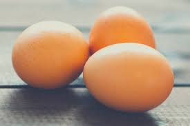
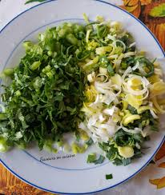
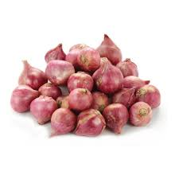
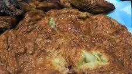

COMMENT FAIRE DES OMELLETTES?
Les ingredients
- 03 oeufs

- les condiments

- un cube
- l'huile
- l'oignon

Procedure
pour commencer, casser les oeufs dans un plat ,et y ajouter les condiments au prealable decoupes et 3/4 d'un morceau de cube et un demi oignon decoupe
.mettre une poele au feu et y ajouter de l'huile et lorsque l'huile chauffe ajouter le contenu du bol au prealable battu et et patientez 2 min puis retourner et attendre 2 mins et retirer.
Bon appetit
